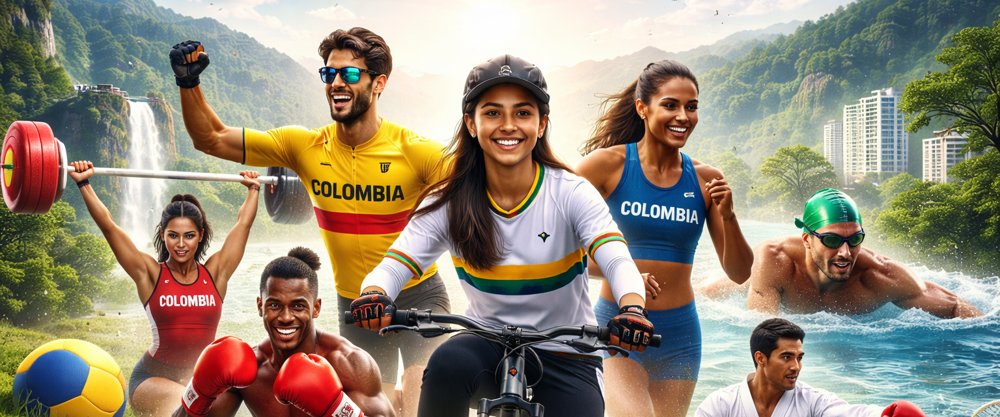
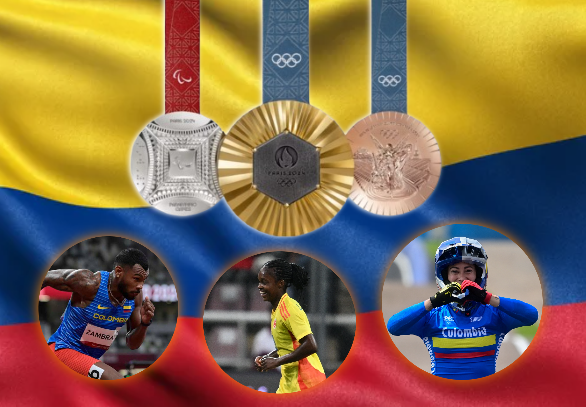
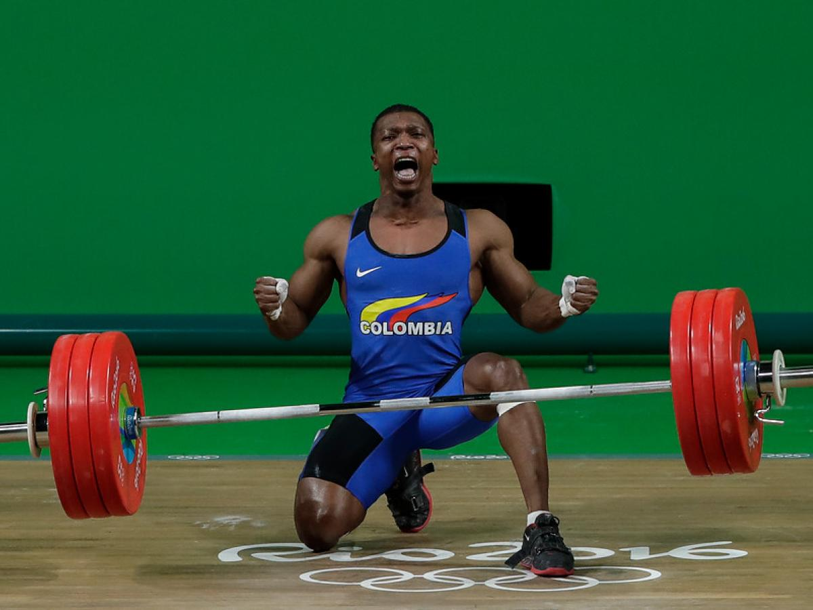
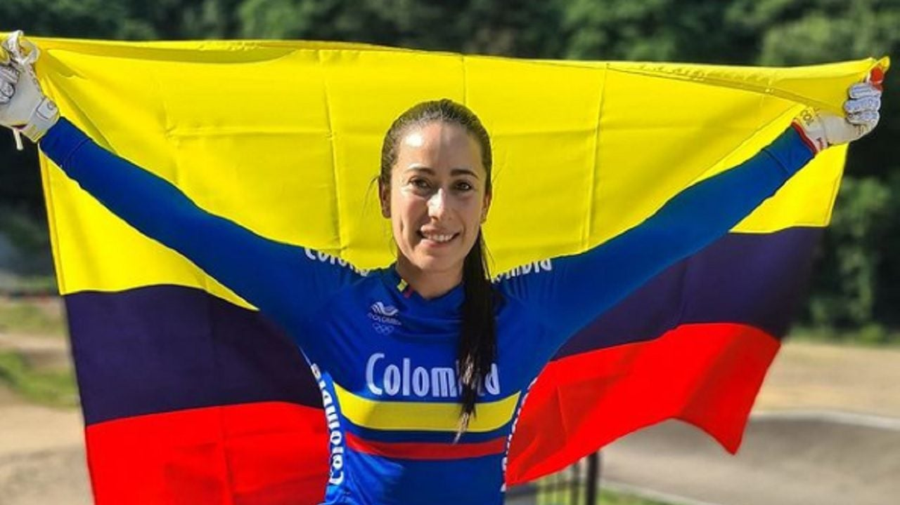

COLOMBIA MULTIDEPORTE
Somos la primera plataforma Transmedia en Colombia dedicada exclusivamente a democratizar y visualizar la desigualdad mediática de los deportes en Colombia.
Más allá del futbol masculino, existen historias que también merecen ser contadas.
Colombia Multideporte es un ecosistema transmedia que transforma la manera en que se cuentan las historias del deporte colombiano, ampliando la narrativa más allá del fútbol para visibilizar disciplinas, atletas y relatos que han permanecido fuera de la agenda mediática.
A través de una arquitectura digital que integra plataformas web, contenidos audiovisuales, videopodcast, eventos y redes sociales, el proyecto construye una experiencia narrativa participativa donde cada medio aporta una pieza del relato deportivo nacional.
La propuesta de valor radica en convertir la diversidad deportiva de Colombia en historias visibles, conectadas y participativas, permitiendo que nuevas audiencias descubran, compartan y se apropien de disciplinas que tradicionalmente han sido marginadas de la cobertura mediática.
De esta manera, Colombia Multideporte no solo informa sobre deporte, sino que reconfigura el ecosistema narrativo deportivo, generando un espacio digital donde disciplinas como el ciclismo, el atletismo, las pesas, el patinaje o la natación tengan mayor visibilidad dentro del imaginario deportivo del país.
🗳️ Urna Deportiva Virtual
¿Cuál es tu deporte favorito?
Participaciones
0 votos registrados
¿Sabías que...?
¿Colombia ha ganado múltiples medallas olímpicas en deportes como el ciclismo, el levantamiento de pesas y el atletismo, pero estos reciben mucho menos cubrimiento mediático que el fútbol masculino?

Colombia ha ganado un total de 38 medallas en su historia en los Juegos Olímpicos de Verano. Este palmarés se distribuye en 5 medallas de oro, 16 de plata y 17 de bronce.
🥇 Oro - 5 Halterofilia (2), Ciclismo BMX (2), Atletismo (1)
🥈 Plata - 16 Ciclismo, Halterofilia, Atletismo, Boxeo, Tiro, Gimnasia, Lucha
🥉 Bronce - 17 Boxeo, Halterofilia, Ciclismo, Lucha, Judo, Taekwondo
Total de 38 medallas de 9 deportes diferentes han aportado medallas
Ver vídeo ¡Aquí!¿Sabías que…?
Colombia es una potencia mundial en levantamiento de pesas, con múltiples medallas olímpicas, pero sus deportistas rara vez tienen seguimiento mediático fuera de los Juegos Olímpicos.
👉 Ejemplo: Óscar Figueroa (oro olímpico) tuvo mucha visibilidad en su logro, pero casi nula continuidad mediática después.

¡ESCÚCHAME AQUÍ AMANTE A LOS DEPORTES!Óscar Albeiro Figueroa Mosquera (Zaragoza, 27 de abril de 1983) es un ex levantador de pesas colombiano que competía en la categoría de los 62 kilogramos.[5]Fue plata en los Juegos Olímpicos de Londres 2012, oro en los Juegos Panamericanos de Guadalajara 2011 y oro en los Juegos Olímpicos de Río de Janeiro 2016. Es uno de los 8 colombianos poseedores de dos medallas olímpicas junto a Caterine Ibargüen en triple salto, los ciclistas Mariana Pajón y Carlos Ramírez Yepes, la luchadora Jackeline Rentería, la judoca Yury Alvear, el tirador Helmut Bellingrodt y el también pesista Luis Javier Mosquera.
Es el decimotercer medallista olímpico en la historia de Colombia,[6] el cuarto en ganar una medalla de plata y el tercero en ganar una medalla de oro, siendo el primer varón en Colombia en conseguir una medalla dorada en los Juegos Olímpicos. Igualmente es el cuarto halterófilo colombiano en ganar una medalla en los Juegos Olímpicos y el único en lograr batir un récord olímpico.[7] Es el primer halterófilo colombiano en ser campeón mundial juvenil, y el único en ser medallista en un campeonato mundial juvenil y de mayores, lo hizo en 2001 y 2006, respectivamente.
Ver vídeo ¡Aquí!¿Sabías que…?
Colombia ha tenido campeones mundiales de boxeo como Yuberjén Martínez, pero su presencia en medios es esporádica y depende casi exclusivamente de competencias internacionales.

Yuberjen Herney Martínez Rivas (Turbo,[1] Antioquia, 1 de noviembre de 1991) es un boxeador profesional colombiano que ganó medalla de plata en la categoría minimosca en los Juegos Olímpicos de Río 2016.
Es hijo de pastores protestantes y trabajó como artesano y mecánico. Yuberjen Martínez debutó en el boxeo profesional En el Coliseo Elías Chewgin de la ciudad de Barranquilla disputó su primer combate ante el venezolano Yeison Hernández.
Con el paso a la final de los 49 kilos del boxeo, Yuberjen Martínez se convirtió en el pugilista colombiano más importante en la historia de los Juegos Olímpicos tras las tres medallas de bronce obtenidas por Alfonso Pérez y Clemente Rojas en los Juegos Olímpicos de Múnich 1972, y por Jorge Eliécer Julio Rocha en los Juegos Olímpicos de Seúl 1988.
Martínez compitió en la categoría minimosca del boxeo de los Juegos Olímpicos de Río 2016. Venció al brasileño Patrik Lourenço, al filipino Rogen Ladon, al español Samuel Carmona y al cubano Joahnys Argilagos; disputó la final contra Hasanboy Dusmatov de Uzbekistán, obteniendo la medalla de plata.
Ver vídeo ¡Aquí!¿Sabías que…?
Deportes emergentes como el skateboarding o BMX freestyle ganan visibilidad solo cuando hay medallas, pero no tienen continuidad narrativa.
👉 Ejemplo: Mariana Pajón sí logró posicionarse, pero es una excepción, no la regla.

Mariana Pajón Londoño (Medellín, 10 de octubre de 1991) es una deportista, colombiana, bicicrosista, ciclista de BMX, medallista de plata y doble medallista de oro olímpica, apodada comúnmente como "la reina del BMX". Varios medios periodísticos especializados y deportistas, la consideran la mejor bicicrosista y ciclista de BMX de todos los tiempos.
Es reconocida por ser la número uno en el escalafón mundial de la UCI, medallista de oro en los Juegos Olímpicos de Río 2016[7] y Juegos Olímpicos de Londres 2012, siendo la única deportista colombiana en conseguir un bicampeonato olímpico.[8] Mariana es la primera mujer latinoamericana en conseguir dos oros olímpicos en un deporte individual.
Por haber sido campeona olímpica en los Juegos Olímpicos de Londres 2012 y ganó una medalla de oro,el gobierno colombiano la condecoró con la Orden de Boyacá;[9] además de ser bicampeona olímpica, Mariana ha sido ganadora de varios campeonatos mundiales, nacionales, estadounidenses, latinoamericanos y panamericanos, entre otros. En 2016, la ciudad de Medellín inauguró con su nombre la Pista de Supercross BMX Mariana Pajón.
Ver vídeo ¡Aquí!¿Sabías que…?
¡María Paula Barrera – Oro que pocos vieron!
Colombia ha obtenido medallas de oro en natación paralímpica, pero muchas de estas hazañas no tienen cobertura en horario prime ni seguimiento continuo en medios nacionales?

María Paula Barrera Zapata (nacida el 3 de septiembre de 2001) es una nadadora paralímpica colombiana que compite en competiciones internacionales de natación. Es siete veces campeona de los Juegos Parapanamericanos, dos veces subcampeona mundial y participó en los Juegos Paralímpicos de Verano de 2020
Ver vídeo ¡Aquí!En conclusión... ¿Qué es Colombia Multideporte?
El proyecto Colombia Multideporte se inscribe en un contexto caracterizado por la alta concentración mediática del deporte en torno al fútbol, fenómeno que limita la visibilidad de otras disciplinas y restringe la diversidad informativa en el ecosistema mediático colombiano. Este panorama evidencia una oportunidad significativa para el desarrollo de propuestas alternativas que amplíen la representación del deporte desde nuevas narrativas y plataformas digitales.
Desde la perspectiva del consumo, se identifica un crecimiento sostenido en la demanda de contenidos digitales, especialmente en formatos audiovisuales como YouTube, videopodcast y microcontenidos en redes sociales. Las audiencias, particularmente jóvenes, muestran interés por relatos auténticos, cercanos, emocionales y significativos, lo cual favorece la circulación de historias de vida vinculadas al deporte más allá del alto rendimiento mediático.